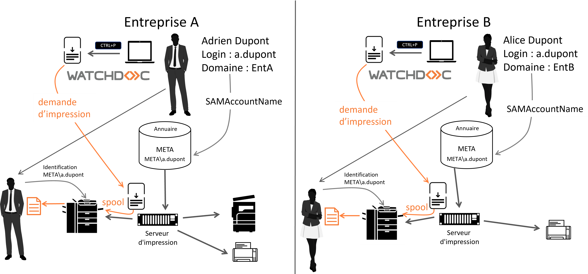
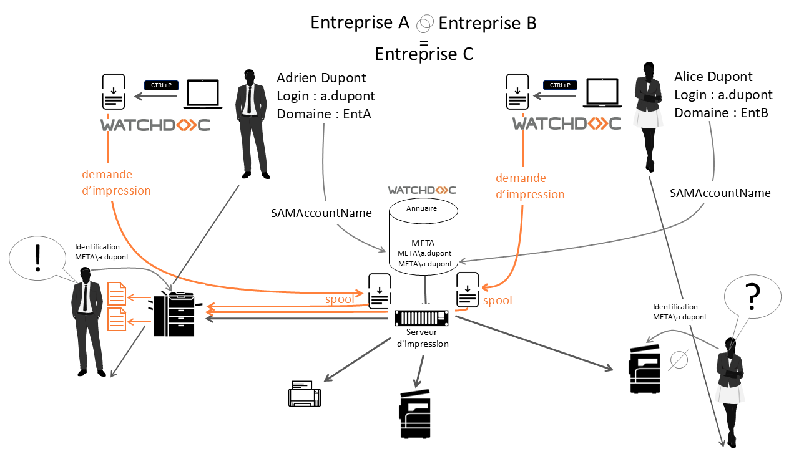
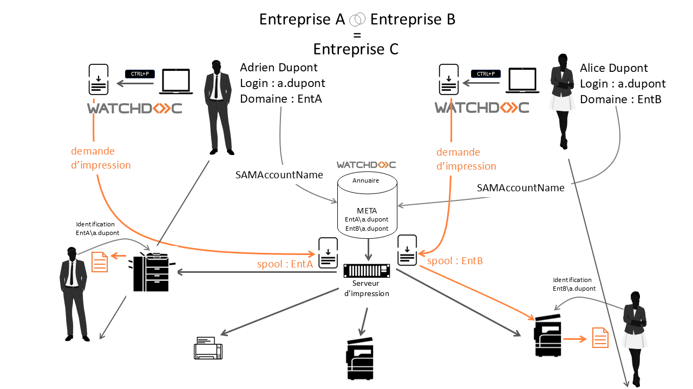
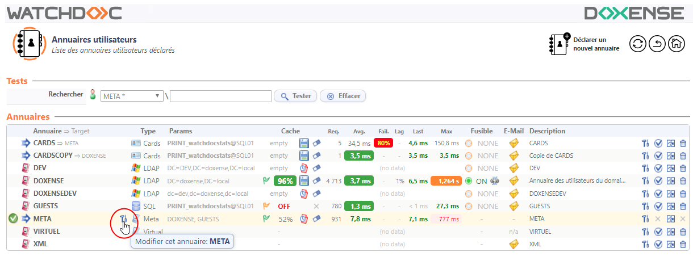
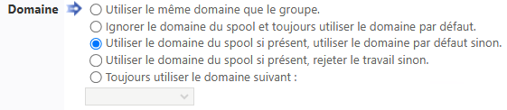

Préambule
Comme Watchdoc permet la gestion des impressions propres à chaque utilisateur d'une entité, le cas spécifique de comptes utilisateurs homonymes peut présenter une difficulté de configuration.
Watchdoc intègre une gestion de l'homonymie reposant sur la configuration des annuaires META et CARDS ainsi que sur le paramétrage des files d'impression.
Prérequis
Pour permettre la gestion des homonymes,
-
il est préférable que le pilote (driver) du périphérique soit capable d'inscrire le domaine de l'utilisateur dans le fichier de spool ;
-
si le domaine n'est pas inscrit dans le spool, il est possible de configurer la gestion de l'homonymie uniquement sur des périphériques associés à un même domaine ;
-
il est nécessaire d'établir un audit de faisabilité tenant compte du contexte technique et organisationnel dans lequel la problématique d'homonymie s'inscrit (architecture réseau, marques et modèles des périphériques, nombre d'annuaires, politique d'impression, etc.).
Principe
Généralement, lors de la création des comptes dans un annuaire (domaine), l'administrateur réseau différencie les utilisateurs qui portent le même nom en ajoutant l'initiale de leur prénom dans le login (ou l'adresse mail). Ainsi, Adrien Dupont a le login a.dupont et Emma Dupont a le login e.dupont. Et si les initiales des prénoms sont identiques, l'administrateur trouve un élément permettant de discriminer les comptes (par exemple, Alexandre Dupont, arrivé après Adrien, se verra attribuer le compte al.dupont ou a.dupont2).
Chaque utilisateur peut ainsi s'identifier sur un WES sans être confondu avec un utilisateur portant le même nom.
Or, il arrive que:
-
l'homonymie n'ait pas été anticipée (rare)
-
ou, plus fréquemment, qu'il soit nécessaire de fusionner plusieurs annuaires distincts en un seul annuaire. C'est le cas lors du rapprochement de plusieurs entreprises qui mutualisent leurs ressources informatiques.
Dans ce cas de figure, s'il n'est pas possible de modifier les comptes utilisateurs (SAMAccountName), la fusion des annuaires dans l'annuaire unique META de Watchdoc risque de générer des homonymes.
L'homonymie évoquée ici n'est pas une homonymie pure portant sur des utilisateurs ayant les mêmes prénoms et noms, mais sur l'homonymie des comptes utilisateurs (SAMAccount Name). Ainsi, Adrien ou Alice Dupont, qui ne sont pas des homonymes, possèdent tous deux un compte (SAMAccoutnName) a.dupont similaire.

Si l'entreprise A d'Adrien Dupont fusionne avec l'entreprise B d'Alice, deux comptes a.dupont seront présents dans l'annuaire META de l'entreprise C née de cette fusion. Ne pas tenir compte de l'homonymie exposerait les utilisateurs au risque de débloquer des impressions appartenant à un utilisateur homonyme. Ce qui, pour certains documents sensibles, poserait problème :

Pour résoudre ce problème, Watchdoc intègre une fonction permettant d'ajouter un domaine au compte utilisateur dans l'annuaire META afin de distinguer les comptes homonymes.

Procédure
Pour activer la gestion de l'homonymie dans Watchdoc, il est nécessaire :
-
de configurer l'annuaire META pour le préparer à gérer des homonymes (et dans CARDS si vous utilisez cet annuaire) ;
-
de configurer les files (ou groupes de files) pour préciser le mode de gestion des homonymes.
Configurer l'annuaire META
-
Depuis le Menu principal de Watchdoc, section Exploitation, cliquez sur Annuaires utilisateurs.
-
Dans la liste des annuaires, éditez les propriétés de l'annuaire META en cliquant sur le bouton :

-
dans l'interface Configuration de l'annuaire, section Sous-annuaires, cochez la case Conserver le domaine initial des utilisateurs. Ainsi, le domaine initial n'est pas remplacé par le domaine META et on évite de créer des homonymes impossibles à discriminer (par exemple, EntA\a.dupont et EntB\a.dupont pourraient devenir tous deux META\a.dupont si on ne conserve pas le domaine initial) ;
-
cliquez sur le bouton
 pour valider la configuration de l'annuaire META.
pour valider la configuration de l'annuaire META.
Configurer la file (ou groupe de files)
-
Depuis le Menu principal, section Exploitation, cliquez sur Files d'impression.
-
Dans la liste Files d'impression, sélectionnez soit le groupe de files, soit la file à configurer.
Si vous choisissez un groupe de files sa configuration s'appliquera à l'ensemble des files incluses dans ce groupe. Vous pourrez cependant modifier le paramétrage de chaque file ultérieurement.
-
Cliquez sur le bouton Editer les propriétés
 .
. -
Dans l'interface Propriétés de la file (ou propriétés du groupe), section Mode Expert, configurez le paramètre Domaine. Cinq options sont présentées, qui dépendent grandement du contexte dans lequel est installé Watchdoc et de la capacité du pilote à inscrire le domaine dans le spool :

-
Utiliser le même domaine que le groupe (paramètre uniquement disponible pour une file) : si la file appartient à un groupe, sélectionnez cette option si vous souhaitez que la file hérite du domaine attribué à ce groupe.
-
Ignorer le domaine du spool et toujours utiliser le domaine par défaut : cochez cette case pour ne pas tenir compte du domaine initial. Il s'agit du paramètre par défaut.
Dans ce cas, comme les comptes enregistrés dans l'annuaire META dépendent tous du domaine META, les homonymes ne seront pas détectés.
-
Utiliser le domaine du spool si présent, utiliser le domaine par défaut sinon : avec cette option, Watchdoc tient compte en priorité du domaine initial (ou du domaine par défaut si le domaine initial n'existe pas). Cette option n'est donc utile que si le domaine est inscrit dans le fichier de spool. Les comptes enregistrés dans l'annuaire META gardent l'information de leur domaine initial (ou par défaut), qui constitue un élément de distinction important.
C'est l'option privilégiée lorsque le pilote des périphériques est capable d'inscrire le domaine dans le fichier de spool.
Cependant, dans le cas où le pilote ne peut pas inscrire le domaine dans le spool, cette option expose au risque qu'un utilisateur débloque le travail d'impression d'un utilisateur homonyme qui a lancé l'impression.
-
Utiliser le domaine du spool si présent, rejeter le travail sinon : avec cette option, Watchdoc tient compte du domaine initial de l'utilisateur (ou du domaine par défaut si le domaine initial n'existe pas). Cette option n'est donc utile que si le domaine est inscrit dans le fichier de spool. Les comptes enregistrés dans l'annuaire META gardent l'information de leur domaine initial (ou par défaut), qui constitue un élément de distinction important.
Dans le cas contraire, Watchdoc considère qu'il ne dispose pas d'éléments suffisants pour établir l'identité du propriétaire du travail d'impression au moment où il s'identifie. En conséquence, Watchdoc n'imprime pas le travail d'impression.C'est l'option qui offre la garantie maximale de distinguer les homonymes, mais qui présente l'inconvénient de faire échouer une impression. De plus, l'information relative à l'échec de l'impression ne peut être communiquée à l'utilisateur, puisque ce dernier ne peut pas être distingué de son (ou ses) homonyme.
-
Toujours utiliser le domaine suivant : cochez ce bouton et sélectionnez dans la liste déroulante un domaine spécifique à utiliser en priorité.
La file n'autorise alors que les travaux d'impression des utilisateurs appartenant à ce domaine.
-
Par ailleurs, vous pouvez choisir d'autres options en fonction de vos exigences :
-
Cliquez sur le bouton
pour valider le paramétrage du groupe de file ou de la file. -
Testez l'impression à partir de comptes homonymes pour vérifier l'efficacité du paramétrage.